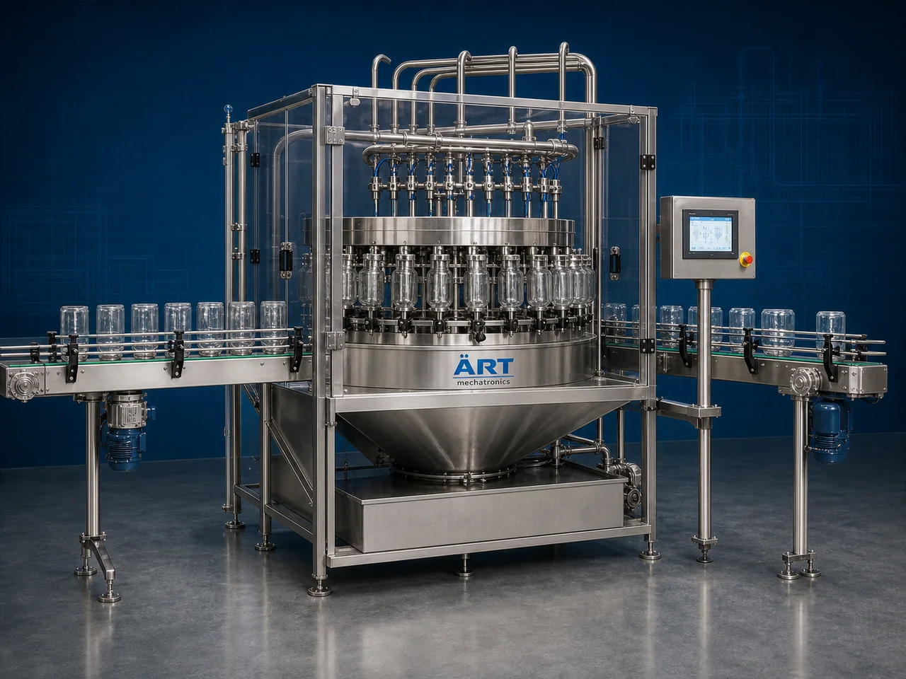

Can, Jar & Box Rinsing Machine (Automatic Container Cleaning & Rinsing System)
A Can, Jar & Box Rinsing Machine, also known as a Container Rinsing Machine, Jar Cleaning Machine, Can Washing Machine, or Automatic Container Cleaning System, is an advanced industrial cleaning solution designed for automatic container rinsing, dust removal, air washing, water cleaning,…

About the Can, Jar & Box Rinsing Machine
Rinsing systems are widely used for: ✔ Can rinsing operations ✔ Jar cleaning applications ✔ Tin container washing ✔ Box dust removal ✔ Food packaging container cleaning ✔ Beverage container rinsing ✔ Pharma container sanitizing ✔ Hygienic packaging preparation
The machine improves: ✔ Product hygiene ✔ Packaging cleanliness ✔ Food safety standards ✔ Dust and particle removal ✔ Production efficiency ✔ Packaging quality ✔ Shelf life protection
Industrial rinsing machines use: ✔ Automatic container handling systems ✔ Servo synchronized conveyor systems ✔ PLC and HMI automation controls ✔ Water rinsing and air blowing systems ✔ Sanitizing and drying mechanisms
to automatically clean and rinse containers before filling operations with superior hygiene and high production efficiency.
Can, jar & box rinsing machines are widely used in industries such as:
Food processing industries Beverage industries Pharmaceutical industries Cosmetic industries FMCG industries Tea industries Spice industries Confectionery industries
where hygienic packaging preparation and contamination-free filling operations are essential.
The machine is highly suitable for: ✔ Tin can rinsing ✔ Jar cleaning ✔ Box dust removal ✔ Bottle rinsing ✔ Food container sanitizing ✔ Packaging line cleaning operations
ART Mechatronics offers high-performance can, jar & box rinsing machines, engineered for continuous industrial operation, hygienic cleaning performance, durable construction, and reliable long-term automation.
Working Principle of Can, Jar & Box Rinsing Machine
- 1. Container Feeding Empty cans, jars, or boxes are automatically fed into rinsing section through synchronized conveyor systems.
- 2. Container Cleaning Process Machine automatically cleans containers using: ✔ Water rinsing ✔ Air blowing ✔ Vacuum cleaning ✔ Sanitizing systems
Servo synchronization ensures smooth container movement and effective cleaning performance.
- 3. Rinsing & Washing Operation Machine handles: ✔ Tin cans ✔ Metal containers ✔ Glass jars ✔ PET jars ✔ Plastic containers ✔ Packaging boxes ✔ Retail containers
accurately and continuously.
- 4. Drying & Air Blowing Process Machine performs: Air drying Moisture removal Dust removal Sterile air blowing
for hygienic packaging preparation quality.
- 5. Inspection & Automation Integration Optional systems include: Vision inspection Sensor-based rejection Sterilization systems UV sanitizing systems
- 6. Finished Container Discharge Cleaned containers discharged automatically for: Filling operations Packaging lines Cartoning systems Retail packaging applications
Types of Can, Jar & Box Rinsing Machines
- 1. Water Rinsing Machine Designed for: ✔ Food and beverage container cleaning applications
- 2. Air Rinsing Machine Suitable for: ✔ Dust removal and dry cleaning systems
- 3. Jar Washing Machine Uses: ✔ Glass and plastic jar cleaning systems
- 4. Can Cleaning Machine Designed for: ✔ Tin and metal can sanitizing applications
- 5. Servo Driven Rinsing Machine Suitable for: ✔ Precision high-speed container cleaning operations
- 6. Fully Automatic Container Rinsing System Designed for: ✔ Complete industrial packaging line automation systems
Industries Using Rinsing Machines
🍃 Food Processing Industry Food containers, ingredient jars, and retail packaging cleaning systems. 🥤 Beverage Industry Can rinsing, bottle cleaning, and beverage packaging sanitizing systems. 💊 Pharmaceutical Industry Medicine container and healthcare packaging cleaning systems. 🧴 Cosmetic Industry Cosmetic jars, lotion containers, and personal care packaging rinsing systems. 🌶️ Spice Industry Spice jars, seasoning containers, and food packaging cleaning systems. 🛒 FMCG Industry Retail packaging container and product packaging cleaning systems.
Features & Advantages
✔ High-speed automatic container rinsing operation ✔ Hygienic and contamination-free cleaning systems ✔ Effective dust and particle removal ✔ PLC and servo automation control systems ✔ Improves food safety and packaging quality ✔ Reduces manual cleaning dependency ✔ Supports multiple container sizes and formats ✔ Reliable long-term industrial performance ✔ Smooth and continuous packaging line integration
Technical Highlights
Machine Type: Automatic rinsing machine Industrial container cleaning system Packaging sanitizing machine Container Type: Tin cans Metal containers Glass jars PET jars Boxes Retail packaging containers Cleaning Integration: Water rinsing systems Air blowing systems Vacuum cleaning systems UV sanitizing systems Features: PLC control system Servo synchronization Touchscreen HMI Automatic container handling Drying systems Applications: Food containers Beverage cans Pharma jars Cosmetic packaging Retail containers Automation: Semi-automatic Fully automatic industrial systems
Turnkey Rinsing Solutions
ART Mechatronics offers: Complete container rinsing systems Automatic cleaning and sanitizing solutions Packaging automation integration systems Conveyor synchronization systems Installation & commissioning After-sales service & AMC
Why Choose Art Mechatronics
Expertise in industrial packaging and automation systems Customized rinsing solutions for multiple industries High-performance and hygienic cleaning technology Advanced PLC and servo automation systems Proven industrial packaging performance across sectors
Applications
Food Processing Industries Beverage Manufacturing Plants Pharmaceutical Packaging Units Cosmetic Manufacturing Facilities Spice Packaging Industries FMCG Packaging Plants
Get pricing & specs for the Can, Jar & Box Rinsing Machine
Share the product, target capacity, current process and plant location. These details help our engineers discuss the right machine or line configuration.
One partner, from design to start-up
ART Mechatronics designs, manufactures, installs and commissions your Can, Jar & Box Rinsing Machine solution with regional presence in India, UAE and Thailand.